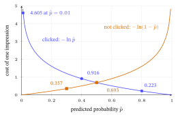

Click-Through Rate Prediction & Feature Interactions
1. The CTR task: a click as a label
Retrieval models a user and an item as vectors and scores the pair by a dot product — good for fishing a few hundred plausible items out of millions, fast. But the dot product is blind to context (the time of day, the device, the slot on the page) and treats every user–item pair through one low-dimensional lens. The ranking stage re-scores that short list with a much richer model and a different target:
\[ \widehat{\text{CTR}} \;=\; P(\text{click}=1 \mid \text{user},\ \text{item},\ \text{context}). \]
The label is implicit and binary: a logged impression that was clicked is a \(1\), one that was shown-but-not-clicked is a \(0\). This is the click-through rate — literally the rate at which shown items are clicked through — and predicting it well is worth billions in ad and feed revenue, which is why this corner of recommendation has its own dense literature and its own benchmarks (the Criteo and Avazu logs of the Datasets & Benchmarks appendix).
Where it sits. CTR prediction is the ranker in the two-stage retrieval → ranking funnel built in Training and Serving a Recommender: retrieval (a dot product over the whole catalog) proposes a few hundred candidates; the CTR model, free to be slow and feature-rich, re-orders them. Retrieval answers “which items are even worth considering?”; ranking answers “of those, which will this user click right now?”
2. The data: sparse features, and why interactions are everything
A CTR training row is not two embeddings — it is a long list of categorical fields, each one-hot encoded (a vector of zeros with a single \(1\) marking the active category):
| Field | Example value | Encoding |
|---|---|---|
| user_id | Ann |
one-hot over millions of users |
| item_id | Matrix |
one-hot over millions of items |
| genre | sci-fi |
one-hot over ~20 genres |
| device | mobile |
one-hot over a few devices |
| daypart | evening |
one-hot over a few buckets |
Concatenated, a single row is a vector with millions of dimensions and a handful of ones — extremely sparse (mostly zero) and extremely high-dimensional. Two consequences shape every model in this chapter:
- A linear model underfits. Logistic regression on these features learns one weight per category — “sci-fi is \(+0.2\) predictive of a click” — and then just adds them. It can never represent “sci-fi is predictive for teenagers on mobile”, because that is a property of a combination of categories, not of any one. The predictive signal is in the feature interactions (also called feature crosses): the conjunction
genre=sci-fi ∧ device=mobile. - You cannot cross them by hand. With \(n\) categories there are \(\binom{n}{2}\) possible pairwise crosses — billions — and almost all are never observed. Hand-engineering the few useful ones (the original “wide” approach) is exactly the manual labor the deep-CTR lineage was invented to remove. The entire chapter is one question: how do you learn which feature interactions matter, automatically?
Why “cross”. A crossed feature (or cross-product feature) is literally the product of two one-hot indicators: it equals \(1\) only when both categories are active, i.e. on their intersection. “Cross” = the conjunction; learning a weight for it = learning that the combination, specifically, predicts clicks.
3. The baseline and the scoreboard: logistic regression, LogLoss, AUC
The simplest CTR model is logistic regression (LR): score the row with a linear function, then squash the score to a probability with the sigmoid:
\[ \hat p \;=\; \sigma(z), \qquad z = w_0 + \sum_i w_i x_i, \qquad \sigma(z)=\frac{1}{1+e^{-z}}. \]
Decoding each piece: \(x_i\) is the (mostly-zero) feature vector; \(w_i\) is the learned weight for category \(i\) (only the active categories contribute, since the rest are \(0\)); \(w_0\) is a bias; and \(\sigma\) — the sigmoid (“S-shaped”), built in Loss Functions & Regularizers — maps any real number to \((0,1)\) so it reads as a probability. This is the same logistic head every model below ends with; the models differ only in what they feed into \(z\).
How CTR is scored. Two metrics dominate (both owned by Evaluation Metrics; here we put a number on them):
- LogLoss (binary cross-entropy) — how calibrated the probabilities are: \[ \text{LogLoss} = -\frac{1}{N}\sum_{n=1}^{N}\Big[\,y_n\ln \hat p_n + (1-y_n)\ln(1-\hat p_n)\,\Big]. \] For a clicked row (\(y=1\)) only \(\ln\hat p\) survives — it rewards a high predicted probability; for a non-click (\(y=0\)) only \(\ln(1-\hat p)\) survives — it rewards a low one. Lower is better; a confident wrong prediction (\(\hat p\to 0\) when \(y=1\)) is punished without bound.
- AUC (area under the ROC curve) — how well the model ranks clicks above non-clicks, ignoring calibration. It has a clean combinatorial reading: the probability that a randomly chosen clicked impression is scored above a randomly chosen non-clicked one — equivalently, the fraction of (click, non-click) pairs the model orders correctly.
Worked example — LogLoss and AUC by hand. Four impressions, with the model’s predicted \(\hat p\) and the true label \(y\):
| Impression | \(\hat p\) | \(y\) |
|---|---|---|
| (Ann, Matrix) | 0.8 | 1 |
| (Ann, Titanic) | 0.5 | 0 |
| (Bob, Matrix) | 0.4 | 1 |
| (Bob, Comedy) | 0.3 | 0 |
LogLoss. Keep the term each label selects: \(\ln 0.8,\ \ln(1-0.5),\ \ln 0.4,\ \ln(1-0.3)\) \(= -0.2231,\,-0.6931,\,-0.9163,\,-0.3567\). Sum \(=-2.1892\); divide by \(N=4\) and negate: \[ \text{LogLoss} = -\tfrac{1}{4}(-2.1892) = \mathbf{0.5473}. \]
AUC. The clicks scored \(\{0.8,\,0.4\}\); the non-clicks scored \(\{0.5,\,0.3\}\). Form all \(2\times 2 = 4\) (click, non-click) pairs and count how many the model orders correctly: \((0.8>0.5)\ \checkmark\), \((0.8>0.3)\ \checkmark\), \((0.4>0.5)\ \times\), \((0.4>0.3)\ \checkmark\) — 3 of 4, so \[ \text{AUC} = \tfrac{3}{4} = \mathbf{0.75}. \] The one misranked pair — Bob’s clicked Matrix (\(0.4\)) scored below Ann’s un-clicked Titanic (\(0.5\)) — is exactly the error AUC measures and LogLoss only feels indirectly. Two complementary lenses: LogLoss grades the probabilities, AUC grades the ordering.
Why calibration is money, not neatness. In ads the click probability is spent: a bid is often \(\text{value}\times\hat p(\text{click})\), so a model with great AUC but miscalibrated \(\hat p\) — right ordering, wrong magnitudes — systematically over- or under-bids real currency. That is why CTR models are graded on LogLoss (calibration), not only AUC (ranking), and why production pipelines often add a calibration step (isotonic or Platt scaling) on top of the trained scorer.
4. The springboard: factorization machines (one recap)
The first model to learn interactions without hand-crossing is the factorization machine (FM), built in full in Traditional Recommender Systems §8. The one idea we build on: give every category \(i\) a small latent vector \(\mathbf v_i\), and model the strength of the interaction between categories \(i\) and \(j\) as the dot product \(\langle \mathbf v_i,\mathbf v_j\rangle\) — not a free per-pair weight:
\[ \hat y = w_0 + \sum_i w_i x_i + \sum_{i<j}\langle \mathbf v_i,\mathbf v_j\rangle\,x_i x_j . \]
This is the trick that makes interactions learnable on sparse data: a pair (sci-fi, mobile) that never co-occurred in training still gets a sensible interaction strength, because \(\mathbf v_{\text{sci-fi}}\) and \(\mathbf v_{\text{mobile}}\) were each trained on their other co-occurrences. And the double sum, which looks like \(O(n^2)\), collapses to \(O(kn)\) (linear in the number of active features, with \(k\) the latent size) via a squared-sum identity — on the tiny three-feature example of Traditional RecSys §8 both forms agree on the same pairwise total \(2.5\), which you can re-check there.
FM has a ceiling, though: it models second-order interactions only, and all with the same fixed form. The deep-CTR models lift exactly that ceiling — keeping FM’s “factorize the interaction” idea and adding higher-order and learned-shape interactions on top.
5. Wide & Deep: memorization plus generalization
Google’s Wide & Deep (2016) makes the ceiling explicit by training two arms at once and summing their scores before the sigmoid:
\[ \hat p = \sigma\big(\underbrace{\mathbf w_{\text{wide}}^{\top}[\mathbf x,\ \phi(\mathbf x)]}_{\text{wide: memorize}} \;+\;\underbrace{\mathbf w_{\text{deep}}^{\top}\,\mathbf a^{(L)}}_{\text{deep: generalize}}\;+\;b\big). \]
- The wide arm is a linear model over the raw features and a few hand-crafted cross features \(\phi(\mathbf x)\) (e.g.
genre=sci-fi ∧ device=mobile). It memorizes: it can nail frequent, specific combinations seen often in the logs. - The deep arm embeds each sparse field into a dense vector, concatenates them, and passes them through a multi-layer perceptron (MLP, the feed-forward net of Neural Networks & Back-propagation) to produce \(\mathbf a^{(L)}\). It generalizes: dense embeddings let it score combinations it has never seen, the way FM does.
The names say the design: memorization (wide, exact, brittle) and generalization (deep, smooth, fuzzy) are different failure modes, so the model keeps both and lets training balance them. Its one weakness is honest: the wide arm still needs a human to pick the crosses \(\phi(\mathbf x)\). The next two models remove that.

7. Deep & Cross (DCN): explicit, bounded-degree crosses
FM and DeepFM stop at second order. The Deep & Cross Network (DCN, 2017) asks: can we get third-, fourth-, …-order interactions explicitly (not just hoped-for inside an MLP), cheaply, with no hand-engineering? Its answer is the cross network, a stack of layers each defined by
\[ \mathbf x_{l+1} \;=\; \mathbf x_0\,\mathbf x_l^{\top}\mathbf w_l \;+\; \mathbf b_l \;+\; \mathbf x_l . \]
Decode it left to right: \(\mathbf x_0\) is the original input vector (the stacked embeddings); \(\mathbf x_l\) is the current layer’s vector; \(\mathbf x_l^{\top}\mathbf w_l\) is a scalar (a learned weighted summary of the current features); multiplying \(\mathbf x_0\) by that scalar multiplies every original feature against the current ones — i.e. it raises the interaction degree by exactly one per layer; \(\mathbf b_l\) is a bias; and the trailing \(+\,\mathbf x_l\) is a residual (the skip-connection introduced in Representation Learning & the Transformer), which keeps every lower-order term alive so a stack of \(L\) layers holds all interaction degrees up to \(L+1\). Crucially each layer adds only one weight vector \(\mathbf w_l\) — so explicit high-order crossing costs linear, not exponential, parameters.
Worked example — one cross layer by hand. Take a tiny two-dimensional input \(\mathbf x_0 = [1,\,2]\), layer weights \(\mathbf w_0 = [0.5,\,-0.5]\), bias \(\mathbf b_0 = [0,\,0]\), and (first layer) \(\mathbf x_0 = \mathbf x_l\). Step through the formula:
- The scalar summary: \(\mathbf x_0^{\top}\mathbf w_0 = (1)(0.5) + (2)(-0.5) = 0.5 - 1.0 = -0.5.\)
- Cross it back onto \(\mathbf x_0\): \(\mathbf x_0 \cdot (-0.5) = [-0.5,\,-1.0].\)
- Add bias and the residual \(\mathbf x_0\): \([-0.5,\,-1.0] + [0,0] + [1,\,2] = \mathbf{[0.5,\,1.0]}.\)
So \(\mathbf x_1 = [0.5,\,1.0]\). Every entry of \(\mathbf x_1\) now contains a product of two original features (a degree-2 cross), and one more layer would push it to degree-3 — explicit, hand-checkable, and cheap. The deep arm of DCN runs in parallel (an ordinary MLP), and the two are concatenated into the §3 logistic head, exactly as in the §5 figure.
DCNv2 — the cross at web scale (2021). The cross above squeezes all interaction through a single scalar \(\mathbf x_l^{\top}\mathbf w_l\) — cheap, but a capacity bottleneck. DCNv2 (Wang et al., WWW 2021) replaces that weight vector with a weight matrix \(W_l\), so each layer learns a far richer cross, \(\mathbf x_{l+1}=\mathbf x_0\odot(W_l\mathbf x_l+\mathbf b_l)+\mathbf x_l\); and to keep it affordable at serving time it factorizes \(W_l\) into low-rank factors routed through a mixture of experts. It is the version actually deployed at web scale, and the one to reach for over the 2017 DCN.
8. The rest of the lineage, in one line each
The same template (§5 figure) accounts for the models that followed; each one re-engineers the explicit-interaction tower:
- xDeepFM (2018) — its Compressed Interaction Network (CIN) learns explicit high-order crosses at the vector level (Hadamard products between feature-map vectors), where DCN crosses at the bit/scalar level; runs alongside an MLP.
- AutoInt (2019) — uses multi-head self-attention (the mechanism of Representation Learning & the Transformer) over the field embeddings, so the model learns which features to interact rather than fixing the form; interactions become attention weights.
- DIN — Deep Interest Network (2018) — for feeds with a user behavior sequence, applies attention to weight each past behavior by its relevance to the candidate item, so a user’s “interest” is computed per candidate rather than as one static vector. It is the CTR cousin of the sequential models in Sequential & Session-Based Recommendation.
The throughline: every advance is a better answer to “which feature interactions matter, and of what order?” — from FM’s fixed second order, to DCN’s explicit bounded degree, to AutoInt’s attention-learned interactions.
9. Training and serving a CTR model
Three operational facts, each owned elsewhere and only pointed to here:
- Objective. CTR models train by pointwise LogLoss (§3) over logged impressions — a per-row binary classification, not the pairwise BPR ranking loss of the retrieval models. The general negative-sampling and training-loop machinery is in Training and Serving a Recommender.
- Where it runs. As the ranking stage (§1), the CTR model scores only the few hundred candidates retrieval proposed, so it can afford its feature richness; the funnel itself is built in Training and Serving a Recommender.
- Evaluation. Offline, report AUC and LogLoss (§3); the field’s rule of thumb is that an AUC lift of \(0.001\) is practically significant at industrial scale. Which offline metric predicts which online outcome (CTR, dwell, conversion) — and the standard Criteo / Avazu split — are in Evaluation Metrics §11 and the Datasets & Benchmarks appendix.
Are the deep-CTR gains real? (Read before trusting a leaderboard.) The FuxiCTR / BARS benchmark (Zhu et al., 2021) re-ran this whole lineage under equal tuning — thousands of runs, thousands of GPU-hours — and found a sobering result: once each model is tuned fairly, most differ by less than the \(0.001\) AUC the rule above calls “significant.” A well-tuned FinalMLP (Mao et al., AAAI 2023) — two MLP streams with feature gating, no explicit cross network at all — matches or beats the elaborate explicit-cross models. The honest reading: architecture often matters less than careful tuning and a strong embedding table, so treat every “new SOTA CTR model” as a prior (Implementation Choices §1) and re-tune the baselines yourself before believing the delta.
10. Where this fits in the book
This chapter is the ranking counterpart to everything that came before it on the retrieval side. Traditional Recommender Systems gave you matrix factorization and FM; this chapter shows what the field built on FM once features and context entered — the deep-CTR lineage that powers the ranking stage of Training and Serving a Recommender. It also closes a loop with the Datasets & Benchmarks appendix, whose CTR regime (Criteo, Avazu; AUC / LogLoss; random split) is precisely the protocol these models compete under, and with Sequential & Session-Based Recommendation, whose attention machinery reappears here as DIN and AutoInt. As the first Frontiers chapter, it marks the turn from the book’s core ladder to the edges where recommendation meets the wider ML frontier; the next, Bandits & Online Recommendation, takes up what happens when the model must choose what to show and learn from the click it gets back.
11. Exercises
Ten problems on the chapter’s own four-impression example and tiny vectors. Solutions in the back-matter Solutions appendix.
E1. (compute) For a single clicked impression (\(y=1\)) with predicted \(\hat p = 0.5\), compute its LogLoss contribution \(-\ln \hat p\). Then redo it for \(\hat p = 0.9\). Which is smaller, and why does that match “lower LogLoss is better”? (Answer in Appendix B.)
E2. (compute) Using the §3 table, recompute LogLoss after the model improves Bob’s clicked Matrix from \(\hat p = 0.4\) to \(\hat p = 0.7\) (all else unchanged). Show the four terms. (Answer in Appendix B.)
E3. (compute) With the same improvement (Bob/Matrix \(0.4 \to 0.7\)), recompute AUC. Did the misranked pair get fixed? (Answer in Appendix B.)
E4. (compute) A model predicts the same \(\hat p = 0.5\) for all four §3 impressions. Compute its AUC. (Hint: count tied pairs as half.) (Answer in Appendix B.)
E5. (compute) Run a second DCN cross layer: starting from the §7 result \(\mathbf x_1 = [0.5,\,1.0]\) with \(\mathbf x_0 = [1,\,2]\), \(\mathbf w_1 = [1,\,0]\), \(\mathbf b_1 = [0,\,0]\), compute \(\mathbf x_2 = \mathbf x_0\,\mathbf x_1^{\top}\mathbf w_1 + \mathbf b_1 + \mathbf x_1\). (Answer in Appendix B.)
E6. (concept) A linear logistic-regression CTR model gives genre=sci-fi weight \(+0.3\) and device=mobile weight \(+0.1\). Explain why it must predict the same extra log-odds for (sci-fi, mobile) as the sum \(+0.4\), and why that makes it blind to a genuine sci-fi-on-mobile interaction. (Answer in Appendix B.)
E7. (concept) DeepFM and Wide & Deep have the same two-tower shape. State the one concrete thing DeepFM removes, and the one thing it adds (sharing). (Answer in Appendix B.)
E8. (concept) Why does the residual term \(+\,\mathbf x_l\) in the DCN cross layer matter? What interaction degrees would an \(L\)-layer cross network lose if you dropped it? (Answer in Appendix B.)
E9. (extend) FM gives a never-co-occurred pair (sci-fi, mobile) a non-zero interaction \(\langle \mathbf v_{\text{sci-fi}}, \mathbf v_{\text{mobile}}\rangle\). Explain, in terms of where those two vectors got their gradients, how FM can do this when a free per-pair weight \(w_{ij}\) cannot. (Answer in Appendix B.)
E10. (apply) You are the ranking stage and retrieval hands you 200 candidates for Ann on mobile in the evening. Sketch, in three steps, how a DeepFM model turns those 200 rows into a ranked list, naming the feature fields, the embedding step, and the scoring metric you would log offline. (Answer in Appendix B.)
12. Glossary
| Term | Plain meaning |
|---|---|
| CTR (click-through rate) | \(P(\text{click}\mid \text{user, item, context})\); the score the ranking stage predicts. |
| Impression | One shown item; the unit of a CTR row, labelled \(1\) (clicked) or \(0\) (not). |
| Sparse / one-hot feature | A category encoded as all-zeros with a single \(1\); CTR rows stack millions of these. |
| Feature interaction / cross | The conjunction of two categories (sci-fi ∧ mobile); where the predictive signal lives. |
| Logistic regression | Linear score \(\to\) sigmoid \(\to\) probability; the CTR baseline and every model’s output head. |
| LogLoss | Binary cross-entropy; grades how calibrated the predicted probabilities are (lower better). |
| AUC | Probability a random click outscores a random non-click; grades ordering, not calibration. |
| Factorization machine (FM) | Models a pairwise interaction as \(\langle\mathbf v_i,\mathbf v_j\rangle\); learns crosses on sparse data (\(O(kn)\)). |
| Wide & Deep | Joint linear-with-hand-crosses (memorize) \(+\) MLP-over-embeddings (generalize) model. |
| DeepFM | Wide & Deep with the wide arm replaced by an FM, sharing one embedding layer; no hand-crossing. |
| Cross network (DCN) | Stacked layers that raise interaction degree by one each, explicitly and with linear cost. |
| xDeepFM / AutoInt / DIN | Vector-wise crosses (CIN) / attention-learned interactions / per-candidate behavior attention. |
13. References
He, X., et al. (2017). Neural collaborative filtering. In Proceedings of WWW. arXiv:1708.05031 (the implicit-feedback / sigmoid-head lineage CTR ranking shares).
Rendle, S. (2010). Factorization machines. In Proceedings of IEEE ICDM. https://doi.org/10.1109/ICDM.2010.127 (the FM springboard; full treatment in Traditional RecSys §8).
Cheng, H.-T., et al. (2016). Wide & Deep learning for recommender systems. In Proceedings of the 1st Workshop on Deep Learning for Recommender Systems (DLRS @ RecSys). arXiv:1606.07792
Guo, H., Tang, R., Ye, Y., Li, Z., & He, X. (2017). DeepFM: A factorization-machine based neural network for CTR prediction. In Proceedings of IJCAI. arXiv:1703.04247
Wang, R., Fu, B., Fu, G., & Wang, M. (2017). Deep & Cross Network for ad click predictions. In Proceedings of ADKDD @ KDD. arXiv:1708.05123
Wang, R., Shivanna, R., Cheng, D. Z., Jain, S., Lin, D., Hong, L., & Chi, E. H. (2021). DCN V2: Improved deep & cross network and practical lessons for web-scale learning to rank systems. In Proceedings of the Web Conference (WWW). arXiv:2008.13535
Lian, J., Zhou, X., Zhang, F., Chen, Z., Xie, X., & Sun, G. (2018). xDeepFM: Combining explicit and implicit feature interactions for recommender systems. In Proceedings of KDD. arXiv:1803.05170
Song, W., et al. (2019). AutoInt: Automatic feature interaction learning via self-attentive neural networks. In Proceedings of CIKM. arXiv:1810.11921
Zhou, G., et al. (2018). Deep Interest Network for click-through rate prediction. In Proceedings of KDD. arXiv:1706.06978
Mao, K., Zhu, J., Su, L., Cai, G., Li, Y., & Dong, Z. (2023). FinalMLP: An enhanced two-stream MLP model for CTR prediction. In Proceedings of the AAAI Conference on Artificial Intelligence. arXiv:2304.00902
Zhu, J., Liu, J., Yang, S., Zhang, Q., & He, X. (2021). Open benchmarking for click-through rate prediction (FuxiCTR). In Proceedings of CIKM. arXiv:2009.05794 (the Criteo / Avazu 8:1:1 split + AUC / LogLoss protocol).
Online sources verified June 2026.